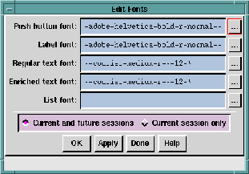
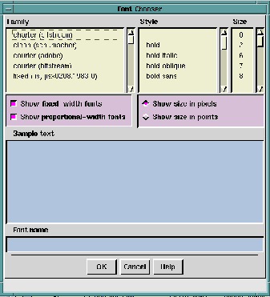

The
Fonts ... option enables you to specify fonts, font styles, and
font sizes for your buttons, labels, text fields and lists. You can
make font selections in a dialog window and interactively apply
them to see how a font or font style looks in your
Ishmail
application. You can change and reapply your changes as often as
you like.
The custom resource file to which your changes are applied is
$HOME/.ishmailrc. You can also edit this file outside of the
Ishmail
program. See the chapter entitled
Ishmail Resources for
information about editing the
$HOME/.ishmailrc file.
To specify fonts for
Ishmail buttons, labels, text fields and lists,
click the
Fonts ... option. The
Edit Fonts window appears.

The
Edit Fonts window contains text fields in which you can specify
the following:
- Push-button Font
- Font used for all push-button.
- Label Font
- Font used for labels, toggle buttons, titles, quick help,
and status message text.
- Regular Text Font
- Font used for all text fields and text areas.
- Enriched Text Font
- Enriched text font used for text in MIME-encoded
messages.
- List Font
- Font used for mail folder labels and text in lists,
including Main window message list, File selection list,
Alias list, Alerts list, Icons list, Displayed headers list,
and so forth.
You can either type your font selection into the appropriate text
field in the
Edit Fonts dialog window or click the "..." button to the
right of any of the
Edit Fonts text fields and make your selection
from
Font Chooser's list of fonts, styles, and sizes.
TIP:
The default font used in the Composition and
Reading windows is a fixed-space font. If you
choose to use a proportional-space font, such
as Helvetica, for these windows you may find
that the format of tabular or column-oriented
data does not look acceptable. If so, switch
back to a fixed font when composing or
reading messages with tabular or
column-oriented data.
When you click the "..." button to the right of
Edit Fonts text field
whose font you want to change. The
Font Chooser Window dialog
window appears. It contains a list of Courier, Helvetica, and
other available fonts that you can use to customize your
Ishmail
windows.
NOTES:
- You can use the
xlsfonts command in
/usr/bin/X11 to see the fonts available on your
system. You can change the list of fonts
Ishmail uses by editing the
Ishmail.fonts
resource file (see
Ishmail Resources). The
resource name is
*fontWin.fontList:
- On some systems, such as those from
Hewlett-Packard, the default font names may
not work well with non-English characters. To
ensure that an acceptable font is used, specify
your font names ending with:
*iso8859-1

The
Font Chooser dialog window contains three columns of font
information including:
- Font family names
- Font styles
- Font sizes
Below the font columns are check boxes and radio buttons that
enable you to select fixed-width fonts and proportional-width
fonts, and to show font sizes either in pixels or points.
The
Sample text field and
Font name field enable you to type a sample
of the font and to see the name font resource.
To select a font from the
Font Chooser window:
- Click (select) an entry in each of the font columns. The
corresponding font name is placed in the
Font name field
and a representative sample of text for the font is shown
in the
Sample text field.
NOTE:
When you make a selection, the scope of the
lists is narrowed to include only those fonts
that meet the selected criteria. For example, if
you click on an entry in the
Size column, the
lists in the
Family and
Style columns are reduced
to only those entries available in the size you
just picked. Click the selected
Size entry again
to deselect it and restore the
Family and
Style
columns to their original values.
- Click the
OK button to accept your selection, which is
then placed in the
Edit Fonts text field beside the "..." button
you clicked to launch the
Font Chooser window.
You can select fonts for one or all four of the
Edit Fonts text
fields.
Apply or cancel your changes using the row of buttons across the
bottom of the window. See
Applying Your Changes.
Preceding Section: Automatic Mail Filing Option
Following Section: Buttons Option
Parent Section: Main Window Options Menu
Contents of Ishmail User's Guide